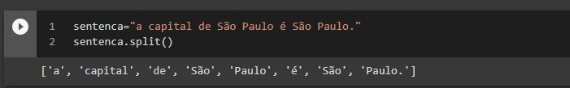

Frank Coelho de Alcantara -2021
“The tools we use have a profound (and devious!) influence on our thinking habits, and, therefore, on our thinking abilities.” Edsger Dijkstra
Linguagens regulares e formais são fáceis de interpretar. As regras e a forma fixa permitem isso. Linguagens naturais não são regulares nem formais.
O Processamento de Linguagem Natural inclui: linguística, neurociência, matemática, computação e estatística.
Não é uma área de pesquisa simples. Felizmente, a aplicação prática é cada dia mais simples. Dispomos de bibliotecas, algoritmos e bases de dados que facilitam o trabalho.
A interface com as máquinas está ficando mais natural. Falamos com elas!
Podemos entender o que está escrito e encontrar informação mais fácilmente.
Com aplicação no comércio, medicina, direito, engenharia, pesquisa, em fim... tudo!!!.
Mais importante, este mercado não tem fim, depende da sua capacidade e criatividade.
São sistemas baseados em Processamento de Linguagem Natural que conduzem conversações com seres humanos.
Curiosamente são simples e, ao mesmo tempo, quase impossíveis.
Turing começou esta busca, ao definir os parâmetros do Teste de Turing.
Passar no teste de Teste de Turing? Em 2014 Eugene Gootsman passou.
Coloque um ser humano em uma sala conversando com um computador e outra pessoa sem saber quem é quem.O computador passará no Teste de Turing se não for possível distinguir a máquina do ser humano.
Eu acredito que você é capaz de fazer uma máquina para passar neste teste.
O Teste de Turing não tem sentido prático no Século XXI, está mais relacionado a mágica que a Inteligência Artificial.
Quando eu falo com vocês, eu o faço sem me preocupar se vocês entendem ou não. É natural e automático. Eu posso, inclusive misturar idiomas.
Inventar gírias, palavras novas, usar ironia e, ainda assim, vocês me entenderão. É isso que estamos procurando e deste ponto, estamos longe.
Alguma coisa entre 10 e 20 anos de distância. E, mais importante. Pode ser Você!
Chatbot: o mais óbvio, conversar com a máquina para ela fazer o que eu quero.
Análise de sentimentos: um investidor lê as notícias para entender o mercado.
Tradução: falar em português e ser ouvido em mandarim e vice-versa.
Entendimento: entender o contexto de um determinado texto, ou fala.
O Python é inevitável para desenvolver os modelos de processamento de linguagem natural.
Dezenas de milhares de usuários e pesquisas ao longo do mundo.
É muito, muito ruim em produção. Mas, é muito, muito bom em desenvolvimento.
Criamos o modelo e, quando for necessário escalar refazemos em C++.
SkLearn. NLP é só uma parte de um todo complexo.
NLTk. A biblioteca mais antiga e mais completa.
SPACY. A biblioteca mais rápida e flexível.
Textblob. Uma interface mais simples para o NLTK.
Gensim. A biblioteca para NLP complexo.
Em português todas são limitadas.
Juntos podemos mudar isso! E eu tenho uma ideia!
Léxico: conjunto de termos usados por uma pessoa, ou área de conhecimento, ou linguagem.
Fonemas: unidade de som da voz..
Grafema: hummm!! grupo de símbolos que representam um fonema.
Morfema: a menor unidade de fonema, em forma de grafema, que tem sentido. Un,Un!
Corpus: no plural corpora, uma grande quantidade de texto. Nosso banco de dados!
Stopwords: conjunto dos morfemas mais comuns na linguagem. Que geralmente não agregam muito ao sentido do texto.
n-Grams: conjunto de $n$ morfemas.
O primeiro passo no processo de processamento de linguagem natural será transformar um corpus em um conjunto de tokens. O analisador léxico transforma o código em tokens usando MEF ou REGEX. Geralmente usamos algoritmos para identificar palavras (espaços) e sentenças (pontuação).
Stemming: reduzir o léxico a sua raíz - meninos e meninas viram menin.
Lemmatization: um stemming com sentido, não apenas removendo algumas letras. Aqui vamos reduzir a palavra a um lemma. O lema é um morfema que faz sentido no idioma.
Vamos ver um notebook com o Spacy, clicando aqui.
Vamos ver um notebook com o NLTK, clicando aqui.